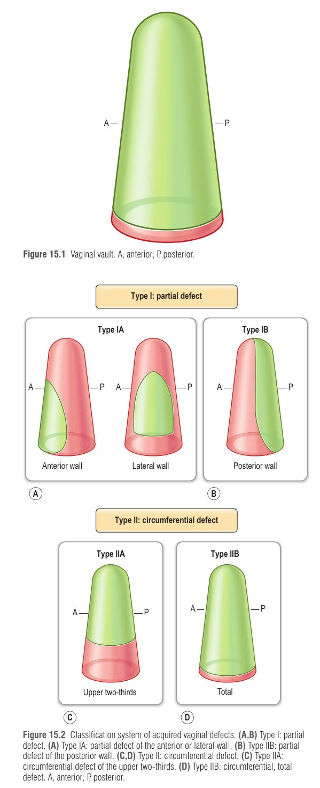
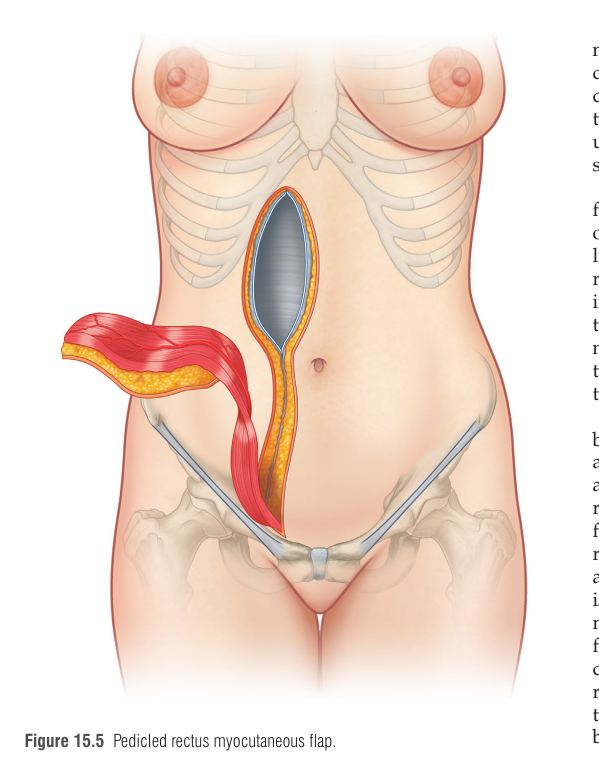
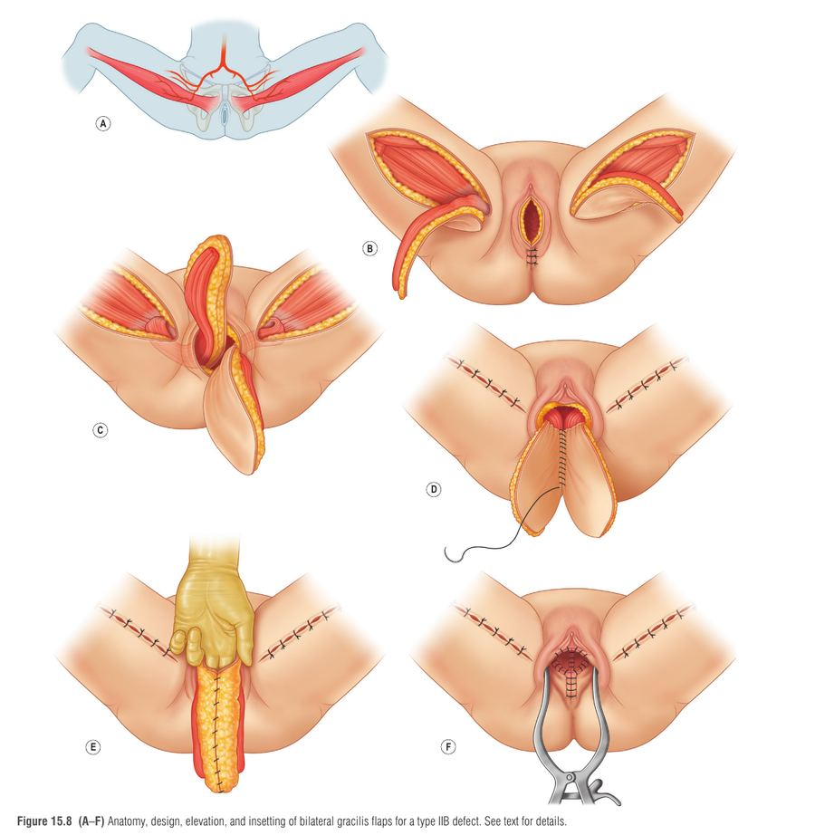

פרק 27: שחזור פגמים נרתיקיים נרכשים Reconstruction of Acquired Vaginal Defects
מתוך Plastic Surgery, Neligan – כרך 4: גו וגפה תחתונה | חלק II: Trunk, Perineum, and Transgender | פרק 15 בספר, מאת Jazayeri, Pusic ו-Cordeiro
פגמים נרתיקיים נרכשים נוצרים בעיקר בעקבות כריתת גידולים ממאירים באגן. זהו פרק קליני-ניתוחי: ההחלטה איזה פלאפ לבחור אינה אקראית אלא נגזרת מסיווג מיקום הפגם (אלגוריתם של Cordeiro). מי שמבין את הסיווג, יודע כמעט אוטומטית איזה פלאפ מתאים.
1 האטיולוגיה והאנטומיה – למה הפגם נוצר ולמה האגן "בעייתי"
גורמים: קרצינומה קולורקטלית מתקדמת פולשת לדופן האחורית של הנרתיק; קרצינומה של שלפוחית השתן מתפשטת לדופן הקדמית; גידולים ראשוניים של דופן הנרתיק; הישנות או התפשטות מקומית של גידולי רחם/צוואר הרחם (pelvic exenteration וכריתת נרתיק מלאה). טראומה וכוויות הן נדירות יחסית, כי הנרתיק מוגן אנטומית. הקשר האנטומי: שלפוחית, נרתיק ופי הטבעת קשורים זה לזה בתמיכה ליגמנטרית משותפת – כריתה של אחד מהם עלולה לגרום לצניחה והרניה של האחרים. בנוסף, אחרי הוצאת אברי האגן, דפנות האגן יוצרות חלל מת קבוע שאינו קורס (non-collapsible dead space) – שאליו נכנסות לולאות מעי דק, ונוצרים הדבקויות ופיסטולות.
הנרתיק עצמו הוא שק גלילי מתנפח: אורך 6–7.5 ס"מ בדופן הקדמית ועד 9 ס"מ בדופן האחורית; צר בפתח (introitus), רחב באמצע, וצר שוב סמוך לצוואר הרחם. הוא נטוי אחורה ויוצר זווית של 90° עם הרחם. הפתח הוא אתר שכיח לצלקת מכווצת (contracture), ולכן כל עיוות במיקומו ביחס לאורתרה, לפרינאום ולפי הטבעת חייב לקבל תשומת לב.
שתי פרוצדורות אבלטיביות שיוצרות את הבעיה:
פרוצדורה
מה מוסר
נתונים מהפרק
כריתה בטנית-פרינאלית (APR)
כל פי הטבעת, תעלת האנוס והאנוס; נוצרת קולוסטומה קבועה (לגידולי רקטום נמוכים מאוד)
תמותה ניתוחית >20% בשנות ה-40, כיום 2%–4%; כ-50% סיבוכים בתוך 30 יום
היסטורית: פצע פתוח לריפוי שניוני ← סגירה ראשונית עם נקזים ושחזור מאוחר (נכשל בעיקר באזורים מוקרנים) ← היום: שחזור מיידי בפלאפים מקומיים/אזוריים. גם כך, סיבוכי פצע מתרחשים ב-20%–30% מהמטופלות.
2 סיווג הפגמים – הלב של הפרק
הסיווג מבוסס על המיקום האנטומי, ומכוון ישירות את בחירת השחזור:
סוג
תיאור
אטיולוגיה אופיינית
הפלאפ המועדף
IA
חלקי – דופן קדמית או צדדית
כריתת גידולי דרכי שתן; גידול ראשוני של הנרתיק
פלאפ סינגפור מותאם (פשוט, פלאפ פסציוקוטנאי)
IB
חלקי – דופן אחורית (השכיח ביותר הדורש שחזור)
התפשטות קרצינומה קולורקטלית
פלאפ רקטוס מיוקוטנאי פדיקלי (VRAM)
IIA
היקפי – שני-שליש עליונים
מחלת רחם וצוואר הרחם
רקטוס מגולגל (tubed), או קולון/ג'ג'ונום
IIB
היקפי – נרתיק שלם (לעיתים כולל פתח)
אקסנטרציה אגנית
גרסיליס דו-צדדי
בחירת הפלאפ נגזרת מהסיווג, והמטרות הן חמש: פצע, חלל מת, רצפת אגן, גוף, מין.

סיווג הפגמים: סוג I חלקי (IA – דופן קדמית/צדית, IB – דופן אחורית) וסוג II היקפי (IIA – שני-שלישים עליונים, IIB – כולל). מעל: שרטוט הנרתיק (A קדמי, P אחורי) — Neligan 5th ed., Fig. 15.1, 15.2
3 התכנון לפני הניתוח
הצלחה תלויה בגישה רב-תחומית: מנתח אונקולוגי ומשחזר (תכנון הפגם הצפוי ומיקום הסטומה), הרדמה (עומס המודינמי), רדיותרפיה (ההקרנה משפיעה גם על אתר המקבל וגם על התורם), אונקולוגיה רפואית (תזמון כימותרפיה מול ריפוי פצע), ובמקרים רבים גם פסיכיאטר ומטפל מיני. חשוב להגדיר עם המטופלת ובני משפחתה את המטרות בפירוט.
ההבדל בין שחזור אנטומי לתפקוד מיני: במחקר של Ratliff (שחזור בגרסיליס), ב-70% נמצא נרתיק תקין פיזית, אך פחות מ-50% חזרו לפעילות מינית. הסיבות: חוסר הנאה (37%), יובש (32%), הפרשות עודפות (27%), מבוכה מהסטומה (40%) ומעירום מול בן/בת הזוג (30%). הקביעה החשובה: הגורם המנבא החשוב ביותר לפעילות מינית אחרי הניתוח הוא פעילות מינית קודמת, ולא סוג השחזור.
4 הטכניקה הניתוחית – פלאפ אחרי פלאפ
4.1 פלאפ סינגפור מותאם (Singapore / pudendal thigh flap) – סוג IA
פלאפ פסציוקוטנאי, אמין וגמיש, המתאים יפה לפני השטח של הגליל הנרתיקי. אספקת דם: העורקים הלביאליים האחוריים; עצבוב: ענפים פרינאליים של העצב העורי האחורי של הירך. מתוכנן בקפל הירך, לרוחב לביה מג'ורה חסרות השיער, בגודל 9×4 עד 15×6 ס"מ. מסמנים את השוליים האחוריים ברמת ה-posterior fourchette; מרימים עור, תת-עור, פאשיה עמוקה ואפימיזיום של שרירי האדוקטור. אפשר פלאפ חד-צדדי או דו-צדדי; הפלאפ מוכנס דרך מנהרה מתחת ללביה או בחיתוך הלביה, ואתר התורם נסגר ראשונית.
נפח גדול + שטח עור גדול: העור מחליף את כל הדופן האחורית, והשריר והתת-עור מביאים רקמה מושקית שממלאת את החלל המת ומפרידה בין תוכן הבטן לאזור הפגיעה. אספקת דם: כלי האפיגסטריקה התחתונים העמוקים (DIEA/V), הנכנסים לשריר בדופנו האחורית-צדדית 6–7 ס"מ מעל נקודת ההיצמדות שלו לעצם הערווה (pubis).
תכנון עם המנתח הקולורקטלי: לוודא שהכלים לא נחתכו בכריתה, והשריר לא נפגע בהצבת הסטומה. בדרך כלל הסטומה בצד שמאל כדי לשמר את הרקטוס הימני; אם נעשה חתך בטני, לא לתכנן אותו סביב הטבור משמאל (סכנה לדם בטבור).
VRAM מועדף לדופן אחורית כי אי העור ממורכז מעל שורות הפרפורטורים ואינו פוגע בשריר הנגדי ובסטומה. אפשר גם עיצוב רוחבי. גודל עד 10×20 ס"מ עם סגירה קלה של התורם.
הנקודה הקריטית: בהכנסה לפגם יש להימנע מכיווץ או מתח על הפדיקל – זו הסיבה העיקרית לכישלון הפלאפ. שמירה על ההיצמדות הדיסטלית של השריר מפחיתה מתח.
וריאציה – Rectus musculoperitoneal: לוקחים עם השריר טלאי של נדן אחורי ופריטונאום מעל ה-arcuate line, בדיוק במידות הרירית שנכרתה, בלי עור. הפריטונאום עובר רה-אפיתליזציה לאפיתל קשקשי שאינו ניתן להבחנה מרירית נרתיקית.
לפרוסקופי/רובוטי: אפשרי; הנדן הקדמי נשאר שלם.

פלאפ רקטוס אבדומיניס מיוקוטנאי פדיקלי (אנכי): האי הפדיקלי מועבר מהבטן אל האגן — Neligan 5th ed., Fig. 15.5
4.3 סוג IIA – רקטוס מגולגל, סיגמואיד או ג'ג'ונום
מעדיפים רקטוס על פני גרסיליס דו-צדדי, כי שרירי רצפת האגן והערווה שביניהם מונעים העברת הגרסיליס אל הפגם. העור "מגולגל" לצינור (מעדיפים אי עור רוחבי – קל יותר לתמרון ופדיקל ארוך מעט יותר): רוחב 12–15 ס"מ נותן ניאו-וגינה בקוטר 4 ס"מ, ותופרים לשארית הנרתיק מלמעלה. כשהרקטוס אינו זמין:
מקטע 15 ס"מ על הענף הרביעי של עורק המזנטרי העליון, כ-30 ס"מ דיסטלית ל-ligament of Treitz
4.4 סוג IIB – גרסיליס דו-צדדי
נדרש אי עור גדול. הפלאפים המחוברים נותנים נפח ומילוי לחלל האגן. אספקת דם: העורק הצירקומפלקסי הפמורלי המדיאלי, הנכנס לשריר 7–10 ס"מ מתחת לפקעת הערווה. אי עור אליפטי בערך 6×20 ס"מ במרכז שני שלישים פרוקסימליים, עם גבול קדמי על הקו שבין פקעת הערווה לגיד ה-semitendinosus. הפלאפים עוברים בתעלה תת-עורית, נתפרים באמצע ליצירת שק ניאו-וגינלי, והקצוות הפרוקסימליים נתפרים לפתח. הפלאפ עשוי לשמר תחושת לחץ דרך ענפי העצב האובטורטורי.

שני פלאפי גרסיליס דו-צדדיים לפגם מסוג IIB: אנטומיה, תכנון, הרמה והחדרה (A–F) — Neligan 5th ed., Fig. 15.8
4.5 שיקולים מותאמי מטופלת
מצב
התאמה
השמנה (גורם סיכון לריפוי לקוי אחרי רקטוס), IIB
פלאפי סינגפור דו-צדדיים דקים
קשישות / תחלואה, לא צפויות להחזיר יחסי מין
אפשר לוותר על שחזור נרתיק; רקטוס לסגירת חלל מת עדיין מועיל
אפשרויות אזוריות מוגבלות ← פלאפ חופשי או פרפורטורים פדיקליים: muscle-sparing VRAM, DIEP, SGAP/IGAP, ALT, free-style
5 טיפול לאחר הניתוח
נקז אגני תמיד בסוף הניתוח; משאירים עד שהמטופלת ניידת והתפוקה יורדת (לא לפי סף מספרי קבוע).
תמיכה המודינמית ותזונתית, מניעת DVT, אנטיביוטיקה מונעת.
מזרן מאוורר (fluidized) ואיסור על ישיבה לפחות 4 שבועות; לשכב על הצד, לעמוד או ללכת.
סטנט נרתיקי אינו שגרתי; אחרי ריפוי – הרחבה הדרגתית. אם המטופלת רוצה קיום יחסי מין, הרחבה (דילטציה) חייבת להימשך באופן קבוע לכל החיים; מתחילים כ-2 חודשים אחרי הניתוח, עם מרחיבים בהתאמה אישית. קרם אסטרוגן עוזר ביובש בסוג I.
6 סיבוכים, פרוגנוזה ותוצאות
פרמטר
VRAM
גרסיליס
סינגפור / פרינאלי-גלוטאלי
סיבוכי פצע פרינאלי (טווחי הספרות)
15.8%, 16.4%, 26.8%
37%, 68%, 40%
42.5%, 44.2%, 44.4% (פרינאלי/גלוטאלי)
אובדן פלאפ (חלקי/מלא)
<5%
10% עד >20%
–
שיעור סיבוכים כולל
36%
53%
44% (סינגפור)
סיבוך אתר תורם
בלט/הרניה בטנית (עד 66.7% בדיווח אחד; אך דומה לקבוצה ללא פלאפ)
אבצס/המטומה בירך, הפרעות תחושה, צלקת – עד 40%; המטומה 16%
–
סיבוכים מוקדמים עיקריים: זיהום ואבצס אגני (3%–16%, מופחת עם פלאפ), ריפוי מאוחר, אובדן פלאפ. אתר שכיח להיפרדות פצע: סגירת הפרינאום האחורית – בדרך כלל מגיב לטיפול שמרני.
ב-pooled analysis 50% (122 מתוך 246) חזרו לפעילות מינית. בנוסף ב-Ratliff: 33% יובש, 28% הפרשות, 20% סברו שהניאו-וגינה קטנה מדי, 18% prolapse של הפלאפ ו-18% כאב בקיום יחסים.
הראיה למעלת השחזור המיידי (Butler): בפצעי APR מוקרנים שניתן היה לסגור ראשונית, הוספת VRAM מיידי הורידה: אבצס פרינאלי 9% מול 37%, דהיסנס פצע פרינאלי עיקרי 9% מול 30%, ופרוצדורות ניקוז 3% מול 25%. הפלאפ ממלא חלל מת, מפריד מעי מהפרינאום, ומחליף עור מוקרן בעור לא מוקרן.
7 טכניקות זכירה
ראשי תיבות: S-R-R-G – סוג הפגם ← הפלאפ
S – Singapore ← סוג IA (קדמי/צדדי חלקי). R – Rectus (VRAM) ← סוג IB (אחורי חלקי). R – Rolled rectus (או קולון/ג'ג'ונום) ← סוג IIA (היקפי עליון). G – Gracilis דו-צדדי ← סוג IIB (היקפי שלם).
סיפור דמיוני
דמייני בניין דירות עם ארבע קומות: בקומה הראשונה (IA) מתגורר סינגפורי קטן וגמיש שמתאים לחדר קטן. בקומה השנייה (IB) גר "רקטוס" חזק עם שק גדול של חומרי בנייה שממלא את המרתף שאחריו (חלל מת). בקומה השלישית (IIA) אותו רקטוס מתגלגל כמו שטיח לצינור. ובקומה הרביעית (IIB) שני גרסיליסים, תאומים, מתחברים ידיים לבניית שק שלם לכל הבית.
Cordeiro PG, Pusic AL, Disa JJ. A classification system and reconstructive algorithm for acquired vaginal defects. Plast Reconstr Surg. 2002;110(4):1058–1065.
המאמר המקורי של הסיווג והאלגוריתם (מופיע ברשימת המקורות של הפרק).מאמר מקור
9 מקרה קליני ותרגול
וינייטה
אישה בת 58 עם סרטן רקטום נמוך שפלש לדופן האחורית של הנרתיק, לאחר כימורדיותרפיה ניאו-אדג'ובנטית. מתוכננת APR עם קולוסטומה שמאלית וכריתת הדופן האחורית של הנרתיק. היא מעוניינת לשמר חיי מין. המנתח הקולורקטלי מתכנן חתך בטני. מה הפלאפ המועדף, ומה יש לתאם עם הצוות הקולורקטלי?
1. אילו הם סוג הפגם וסוג הפלאפ המועדף בווינייטה (דופן אחורית חלקית אחרי כריתת רקטום)?
נכון: סוג IB (חלקי, דופן אחורית) הוא הסוג השכיח ביותר הדורש שחזור, ומקורו בהתפשטות קרצינומה קולורקטלית. הוא דורש נפח לחלל המת שנוצר מכריתת הרקטום, ולכן VRAM הוא הבחירה. סינגפור (IA) מתאים לפגם קדמי/צדדי שאינו דורש נפח. ג'ג'ונום שמור ל-IIA כשאין רקטוס. גרסיליס דו-צדדי הוא ל-IIB, פגם היקפי שלם.
2. מה ניתן לומר על פלאפ הגרסיליס בשחזור סוג IIB?
נכון: אספקת הדם של הגרסיליס היא העורק הצירקומפלקסי הפמורלי המדיאלי. האפיגסטרי התחתון העמוק מזין את הרקטוס. הלביאלי האחורי מזין את פלאפ סינגפור. גרסיליס אינו גלוטאלי ומשמש לפגם שלם (IIB), לא חלקי.
3. מהי הסיבה העיקרית לכישלון פלאפ הרקטוס שהוכנס לפגם אחורי?
נכון: כיווץ או מתח על הפדיקל (DIEA) הוא הגורם העיקרי לכישלון; שמירה על ההיצמדות הדיסטלית של השריר מפחיתה מתח. גודל העור אינו הבעיה (אפשר עד 10×20 ס"מ), וצבע העור או נקזים אינם הגורם העיקרי.
4. מה הממצא העיקרי במחקר של Butler על VRAM מיידי בפצעי APR מוקרנים?
נכון: הפלאפ מפחית סיבוכי פצע על ידי מילוי חלל מת, הפרדת מעי מהפרינאום, והחלפת עור מוקרן בעור לא מוקרן (אבצס 9% מול 37%, דהיסנס 9% מול 30%, ניקוז 3% מול 25%). הממצא אינו קשור להישנות גידול, ואינו טוען לאפס הבדל או להחמרה.
5. איזו הנחיה נכונה בטיפול שלאחר שחזור נרתיקי אם המטופלת רוצה קיום יחסי מין?
נכון: אם רוצים להשתמש בניאו-וגינה למגע מיני, ההרחבה צריכה להימשך באופן סדיר לכל החיים, והיא מתחילה בערך חודשיים לאחר הניתוח. סטנט אינו שגרתי בכל המקרים, ואיסור הישיבה הוא לפחות 4 שבועות (לא שבוע).
6. מה נכון לגבי פלאפ סינגפור מותאם?
נכון: פלאפ סינגפור מבוסס על העורקים הלביאליים האחוריים, מעוצב בקפל הירך לרוחב ללביה מג'ורה, ואתר התורם נסגר ראשונית. פלאפ האפיגסטרי הוא הרקטוס, ולא סינגפור.
10 סיכום של הסיכום
פגמי נרתיק נרכשים: בעיקר אחרי כריתת גידולי אגן (קולורקטלי, שלפוחית, רחם/צוואר). APR ו-PEX יוצרים גם חלל מת שאינו קורס.
סיווג: IA קדמי/צדדי ← סינגפור; IB אחורי (שכיח) ← VRAM; IIA היקפי עליון ← רקטוס מגולגל (או סיגמואיד/ג'ג'ונום); IIB שלם ← גרסיליס דו-צדדי.
חמש מטרות: ריפוי פצע, הקטנת חלל מת, רצפת אגן, דימוי גוף, תפקוד מיני.
VRAM: DIEA, 6–7 ס"מ מעל עצם הערווה; כישלון בעיקר מכיווץ הפדיקל; סטומה שמאל לשמירת הרקטוס הימני. גרסיליס: MFCA.
VRAM אמין יותר (אובדן <5%, סיבוכים 36%) מגרסיליס (10%–>20%, 53%).
פוסט-אופ: נקז אגני, DVT, מזרן מאוורר, לא לשבת 4 שבועות; דילטציה מ-2 חודשים ולכל החיים.
הגורם המנבא לפעילות מינית: פעילות קודמת; ~50% חוזרות לפעילות מינית.